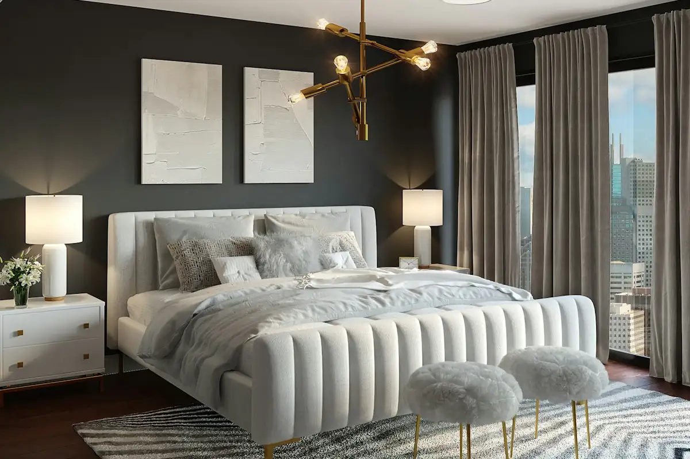

Best Small Space Furniture for Studio Apartments Under $200
Finding the best small space furniture for studio apartments under $200 a piece is easier than it sounds, once you know what to measure and which pieces earn their floor space. Most small bedrooms and studios in US apartments are between 100 and 150 square feet, and once you add a bed, a dresser, and a nightstand, the floor disappears. The trick is choosing furniture that does two jobs at once, fits the exact space you have, and moves with you when your lease ends. This guide compares the pieces that actually work, with real sizes and realistic prices, and the same light-and-layout rules from our guide on how to make a small room look bigger without painting will make every piece you buy look better.
What Should You Measure Before Buying Small Space Furniture?
Measure five numbers before you browse: the room's length and width, your door and hallway width, the space on each side of your bed, the height to your window sill, and the clearance for doors and drawers. Leave at least 24 inches of walking space beside the bed and 30 inches in front of a dresser.
Leave at least 24 inches of walking space on the side of the bed you get out of most often, and at least 30 inches in front of a dresser so drawers can open fully. In a 10 by 10 foot room, a queen bed that is 60 inches wide and 80 inches long leaves very little room on the sides, which is why many renters in tiny bedrooms choose a full bed at 54 inches wide instead. It gives you six extra inches on each side, and that is often the difference between a room that feels cramped and one that feels usable. Sketch the room on paper, mark the outlets and closet, and bring those numbers with you when you shop.
Are Storage Beds the Best First Buy for a Small Bedroom?
A storage bed is the single most useful piece for a tiny bedroom because it replaces a bed frame and a dresser drawer or two. A full-size lift-up bed usually costs $150 to $200, while side-drawer beds run $130 to $199, and both hold out-of-season clothes, extra bedding, and shoes.
Measure the drawer pull-out space before you buy. Side drawers need 20 to 24 inches of clear floor on each side to open, which does not work if your bed is pushed against a wall. A lift-up bed needs clear space above it, so skip it if you have a low ceiling fan or a shelf right over the bed. Check the weight limit and the slat spacing too. A solid platform with slats no more than 3 inches apart will support a mattress without a box spring, which saves you 7 to 9 inches of height. If you already have a good bed frame, a cheaper option is under-bed storage bins on wheels, usually $25 to $40 for a set of two, that slide under a frame with at least 7 inches of clearance.
What Can You Use Instead of a Bulky Nightstand?
A floating shelf, a narrow plant stand, or a slim C-shaped side table works better than a traditional nightstand in a tiny bedroom. A floating shelf costs $25 to $45, holds a phone, a glass of water, and a lamp, and keeps the floor clear. Keep the top at or just below mattress height, usually 24 to 26 inches.
A traditional nightstand is 18 to 22 inches wide, 16 to 18 inches deep, and 24 to 28 inches tall. That sounds small, but in a tiny bedroom it can block your path to the closet. Use renter-friendly adhesive strips or a no-drill shelf with a tension mount if your lease does not allow holes.
If you need a drawer for chargers, medication, or a book, look for a narrow nightstand that is 12 to 14 inches wide instead of the standard 18 inches. These slim versions cost $35 to $70 and still hold the essentials. A small three-tier rolling cart, about 13 inches wide, is another good choice at $30 to $50. You can roll it out when you need it and tuck it beside the dresser during the day. Whatever you choose, keep the top at or just below mattress height, usually 24 to 26 inches, so you can reach your phone without sitting up.
What Size Dresser Fits a Small Bedroom?
Go tall, not wide: a slim dresser 30 to 32 inches wide, 16 inches deep, and 45 to 50 inches tall holds almost as much as a wide six-drawer dresser but takes up half the floor space. Budget versions cost $70 to $150; check drawer depth first, since shallow drawers under 12 inches deep frustrate folded jeans and sweaters.
Look for a dresser with drawers that glide smoothly when full, and anchor it to the wall if you have small children visiting or if your building shakes. Many dressers now include a renter-friendly anti-tip kit with adhesive or a tension strap that does not require drilling into a stud. If a full dresser will not fit, try a fabric cube organizer with a slim frame, about $35 to $60. It is light, easy to move, and works well inside a closet. Place the dresser on the longest empty wall, not directly across from the bed, so you have room to stand and fold clothes.
What Kind of Desk Works in a Tiny Bedroom?
A wall-mounted fold-down desk is ideal for a tiny bedroom that also has to work as a home office. Folded up, it is only 4 to 6 inches deep, and folded down it gives you a work surface about 30 inches wide and 20 inches deep. Prices range from $60 to $120.
Pair it with a folding chair that hangs on a hook behind the door, usually $25 to $45, and you have an office that disappears after work.
If you need a vanity, choose a small desk with a mirror that leans against the wall rather than a wide vanity table. A 32-inch-wide desk with two small drawers costs $70 to $120 and works for both makeup and a laptop. A small stool that tucks completely underneath, about $25 to $35, saves more space than a chair with a back. Put the desk near natural light if you can, and use a small tray or a cup for brushes and pens so the surface stays clear. If you work from home full time, invest in the desk first and skip a separate vanity. For ideas on styling the rest of a small living space around a workspace, see our small living room makeover on a $200 budget.
Are Storage Ottomans Worth It for Small Spaces?
Yes. A storage ottoman is one of the best small-space buys because it is seating, a footrest, a side table, and a storage box in one piece. A cube ottoman is usually 15 to 18 inches square and costs $25 to $45, while a longer storage bench for the foot of the bed runs $50 to $100.
Choose a bench with a hinged lid rather than a loose lid so it is easier to open in a tight space, and pick a fabric you can spot-clean. A bench in a light color or a woven texture also softens a small room. If your bedroom is very narrow, skip the bench at the foot of the bed and use one cube ottoman instead. It can move to the closet, the living room, or the entryway when you need floor space, and it costs less than half as much.
How Do You Choose the Best Small Space Furniture for Studio Apartments Under $200?
Start with the bed and the dresser, then add one small piece at a time. A realistic starter set — a storage bed, a slim tall dresser, one narrow nightstand, and a storage ottoman — costs $300 to $450 at budget prices. Buy the largest piece first and live with it for a week before you buy more.
- Choose light wood, white, or soft neutral colors to make the room feel larger.
- Pick furniture with legs that show the floor underneath, which makes a room look less crowded.
- Use matching bins inside drawers and ottomans so small items do not get lost.
- Leave one wall mostly empty. A little breathing room matters more than one more shelf.
- Measure your elevator, stairwell, and doorways before ordering a bed online.
Finally, check return policies before you buy. Many budget stores allow returns within 30 to 90 days, which gives you time to test a piece at home. Keep the box until you are sure it fits. A tiny bedroom does not need less furniture, it needs smarter furniture, and the right sizes will make the whole room feel calm, usable, and truly yours. For more layout and storage ideas for the same room, see our 15 small bedroom ideas for renters on a budget.
Frequently Asked Questions
What size bed is best for a tiny bedroom?
A full bed is often the best balance for a tiny bedroom. At 54 by 75 inches, it sleeps two people comfortably but leaves more walking space than a queen. If you sleep alone and your room is under 100 square feet, a twin XL at 38 by 80 inches gives you the most floor space and still fits an adult. Measure the space on both sides before you decide.
How can I add storage without a dresser?
Use a storage bed, under-bed bins, a storage ottoman, and vertical space. A tall slim shelf in a corner, a hanging organizer inside the closet door, and hooks on the back of the bedroom door can hold a surprising amount without adding a large piece of furniture. Start with the bed storage, then add one vertical piece.
What furniture should I avoid in a small bedroom?
Avoid wide six-drawer dressers, oversized headboards with shelves, and bulky armchairs. They eat floor space and make the room hard to move through. Avoid matching sets too, because they are often sized for larger rooms. Choose individual pieces that fit your exact measurements instead.
How much should I spend furnishing a small bedroom?
A realistic starter set costs $300 to $450 at budget prices: a storage bed, a slim tall dresser, one narrow nightstand or floating shelf, and a storage ottoman. Buy the largest piece first and spread the rest over a few months. Check secondhand listings and open-box deals at IKEA, Target, and Walmart to bring the total down further.
Where is the best place to buy small space furniture on a budget?
IKEA, Target, Amazon, and Walmart all carry slim, storage-friendly pieces in the $25 to $200 range, and Facebook Marketplace is the best source for secondhand storage beds and dressers. Measure your room and doorways before you order, and check return policies first — many budget stores allow returns within 30 to 90 days.